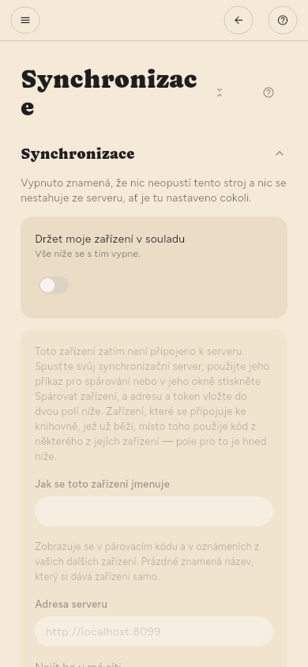

← Správa zdrojů · Obsah · Klávesnice →
Synchronizace
Nastavení › Pokročilé › Synchronizace › Synchronizace. Vaše zařízení se navzájem udržují ve shodě: co jste přečetli, co jste uložili, vaše zvýraznění i samotné články.
Je šifrovaná end-to-end: server ukládá šifrovaný text a vaši knihovnu číst nemůže. Neexistuje žádná hostovaná služba, kde byste se registrovali — adresa, kterou nastavíte, je server, který provozujete vy.

Kdy probíhá
Nastavení › Pokročilé › Synchronizace › Kdy synchronizovat › Jak často nabízí pevný interval — od 15 minut až po jednou denně — a místo něj i okamžiky:
- Po kontrole — jakmile jsou staženy všechny zdroje, ještě než se cokoli shrne. S místním modelem může shrnování trvat dvacet minut a články jsou připravené mnohem dřív.
- Po shrnutí — až je celá kontrola hotová, takže jedna synchronizace přenese články i jejich shrnutí najednou.
- Po každé změně — krátce poté, co něco přečtete, uložíte nebo označíte štítkem.
Dokud je aplikace na obrazovce, Nastavení › Pokročilé › Synchronizace › Kdy synchronizovat › Synchronizovat každou změnu, když je aplikace otevřená odešle každou změnu během několika sekund, ať je v Jak často cokoli; interval pak platí jen na pozadí. Je zapnutá, dokud ji nevypnete, a Jen když o to požádám stále znamená jen když požádáte. Návrat do aplikace jednou synchronizuje při každém nastavení kromě Jen když o to požádám. Změny z vašich dalších zařízení přijdou během několika sekund, dokud je aplikace otevřená.
Ať zvolíte cokoli, měřené připojení nebo pravidlo pro baterii ji stále může pozdržet.
Získání serveru
Server je samostatný program, zdarma a s otevřeným zdrojovým kódem. Stáhněte ho z jeho stránky s vydáními:
- SummaReader Sync, AppImage pro Linux: okno, které server spouští a ukazuje jeho zařízení.
- Balíčky headless pro Linux, macOS a Windows: jen server, pro počítač, který stále běží.
Provozujte ho na počítači, na který dosáhnou všechna vaše zařízení, například na tom, který je doma stále zapnutý. Při spuštění vypíše svou adresu a otisk svého certifikátu. Jeho README popisuje i Docker a službu systemd.
Připojení prvního zařízení
- Na serveru spusťte
summareader-sync first-device "My library" "Desktop", nebo v okně SummaReader Sync stiskněte Pair a device. Token zařízení ukáže jednou a znovu ho ukázat nemůže. - Otevřete Nastavení › Pokročilé › Synchronizace › Synchronizace a zapněte Držet moje zařízení v souladu.
- Vyplňte Adresa serveru, která začíná
https://. Pro server ve stejné síti místo toho stiskněte Najít ho v mé síti. - Vložte token do pole Token zařízení.
- Při prvním spojení aplikace ukáže otisk certifikátu serveru. Porovnejte ho s tím, který vypsal server, a přijměte ho, jen když jsou stejné.
Spárování druhého zařízení
- Připojte první zařízení podle postupu výše.
- V Nastavení › Pokročilé › Synchronizace › Další zařízení stiskněte Vytvořit kód. Ukáže se QR kód a tentýž kód jako text.
- Ve druhém zařízení ho naskenujte nebo vložte pod Nebo se připojit pomocí kódu, pak stiskněte Použít kód. Kód umí naskenovat telefon, Mac a linuxový počítač s webkamerou; ve Windows ho vložte.
První synchronizace na nový server se před nahráním zeptá — server, který vaši knihovnu nikdy neviděl, je rozhodnutí, ne detail.
Obnovovací kód
Vytváří se jednou, v Nastavení › Pokročilé › Synchronizace › Obnovovací klíč. Je to jediná cesta zpět do knihovny, pokud přijdete o všechna spárovaná zařízení. Nikdo ho nemůže vydat znovu.
Text článků
Stav přečtení, zvýraznění i samotné články se přenášejí automaticky. Jejich text a obrázky tvoří většinu objemu a ve výchozím stavu zůstávají za odkazem: synchronizace tomuto zařízení řekne, že kopie existuje, a stáhne se, až článek otevřete.
Nastavení › Pokročilé › Synchronizace › Synchronizace › Uchovávat vše v tomto zařízení to mění — text a obrázky každého článku se stáhnou hned, jak přijdou. Je to nastavení pro zařízení, ne pro knihovnu: vyplatí se na počítači, na kterém čtete offline, v telefonu jde o hodně dat za články, které neotevřete. Každá synchronizace na to použije nejvýše čas z Věnovat nejvýše, nejprve text a potom obrázky. Dokud je aplikace otevřená, stahování pak pokračuje na pozadí, dokud nic nechybí, takže článek, který otevřete později, už obrázek má. Když aplikace přejde do pozadí, zastaví se a pokračuje při další synchronizaci.